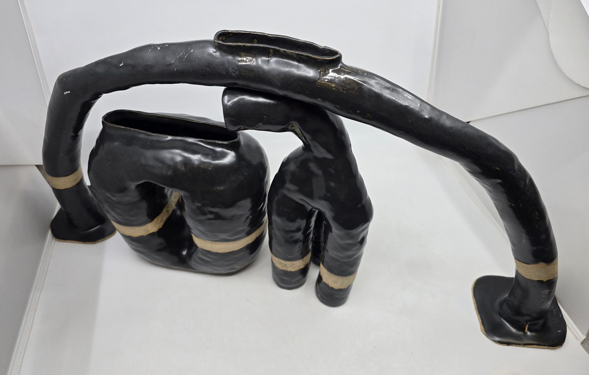
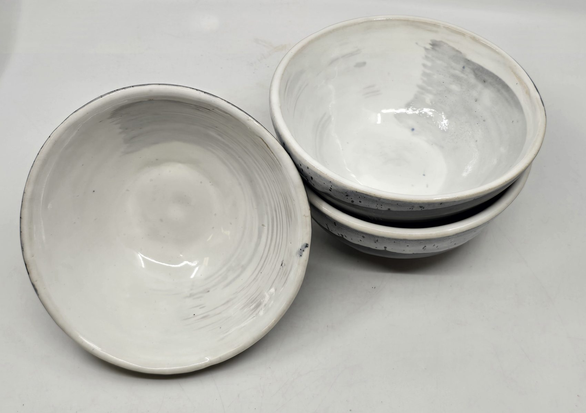
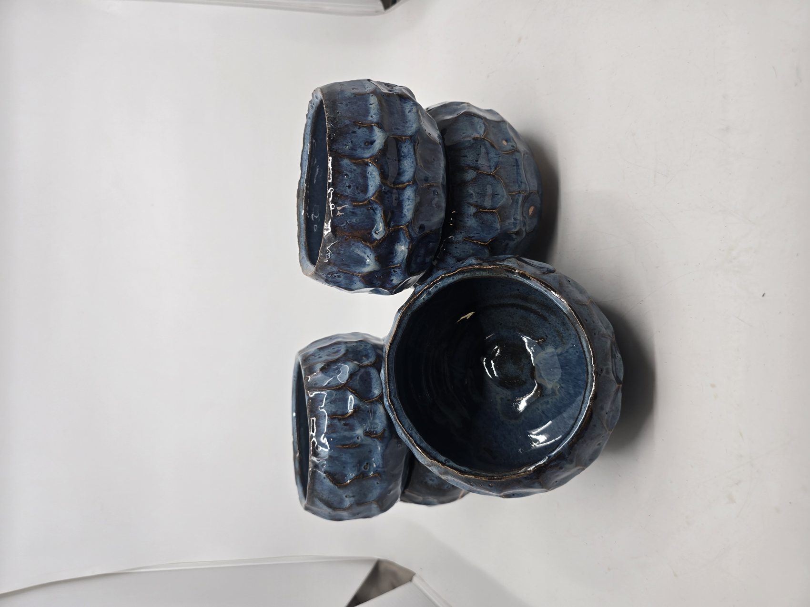
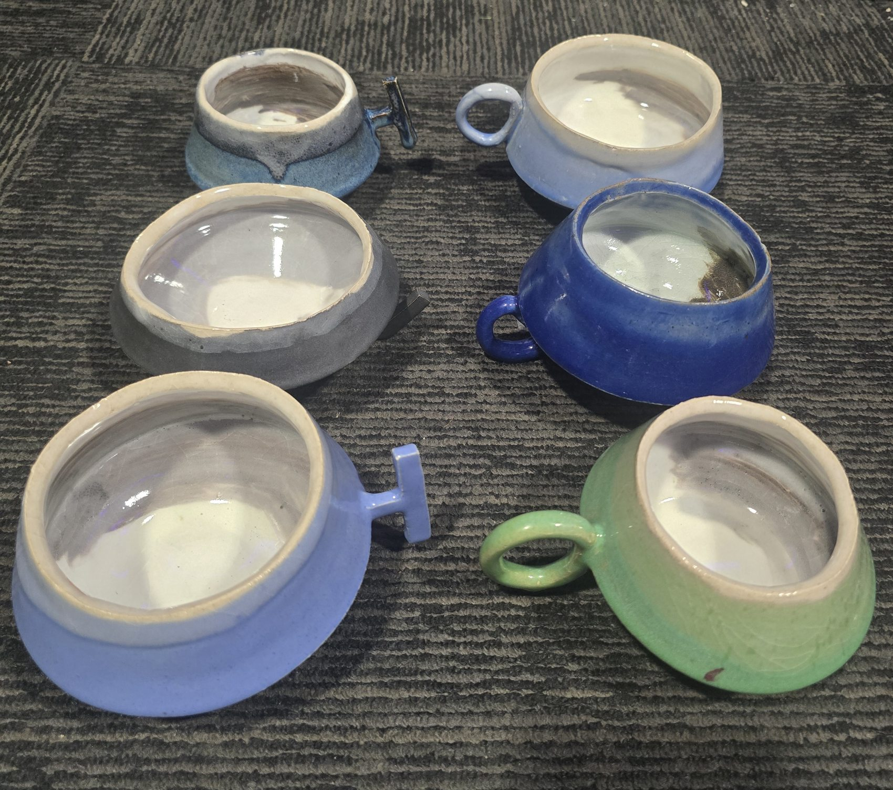
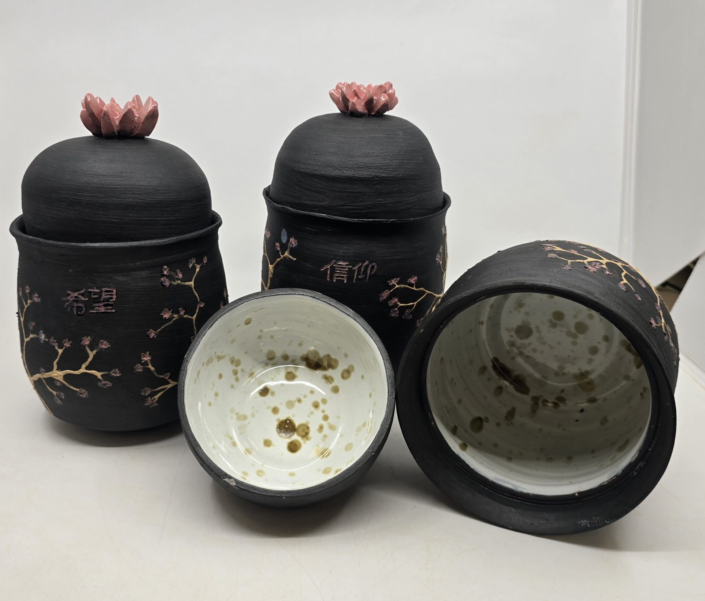
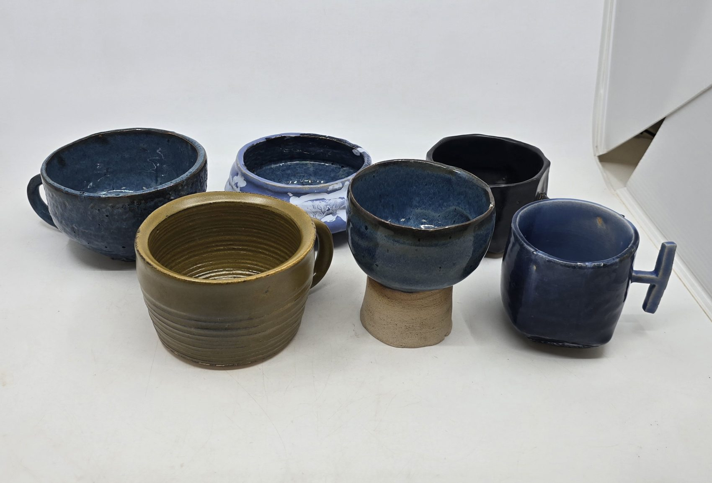
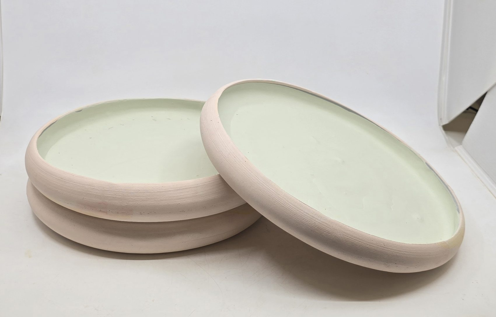
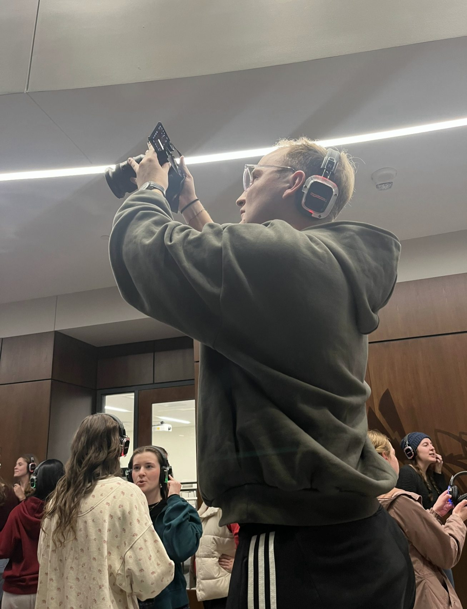

PHOTOGRAPHY
Through sports, events, and everyday moments, I look for unique angles and details that others might pass by. My photography captures a sense of time and place, preserving fleeting moments so their beauty can be revisited. Across personal projects, paid assignments, and campus work, I bring a warm perspective to both shooting and editing, using Adobe Lightroom and Photoshop to shape the final images.
↑ Back to TopCERAMICS
Ceramics gives me the opportunity to step away from digital design and explore creativity through physical materials. I enjoy experimenting with form, texture, color, and glazing to create pieces that are both functional and expressive. Working with clay challenges me to think differently about the design process, from shaping an initial idea to refining the details and seeing how each piece changes through firing. Whether creating bowls, mugs, or sculptural forms, I enjoy the hands-on process of turning an idea into something tangible and unique. Ceramics has strengthened my appreciation for craftsmanship, patience, and the unexpected results that come with creating by hand.










ME

Ideas into something real.
I’m a graphic designer and visual communicator with a love for typography, packaging, and fashion. I enjoy finding opportunities to improve everyday design and creating something people haven’t seen before. My favorite part of the process is taking an idea out of my head, exploring its possibilities, and seeing it become something people can hold, wear, or experience.
My creativity extends beyond the screen through photography, ceramics, and studio art. Outside of creating, you’ll find me skiing, playing soccer, or experimenting in the kitchen. I’m also a black belt in taekwondo—a pursuit that has shaped the patience, discipline, and persistence I bring to my work.
I’m seeking a full-time design position beginning in May 2027, where I can contribute fresh ideas, learn from other creatives, and help bring thoughtful design into the world.
CONTACT
Let's create something together!
Have a project in mind, an opportunity to share, or just want to connect? I'd love to hear from you! Whether you're looking to collaborate, discuss a design opportunity, or bring a new idea to life, feel free to reach out using the form below. I look forward to connecting with you!
Resumé
Original résumé file will be linked when supplied.